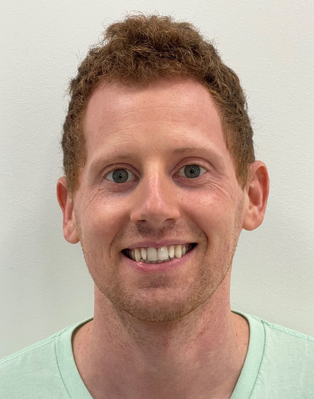
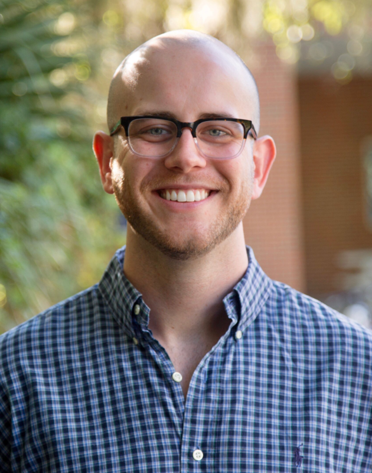
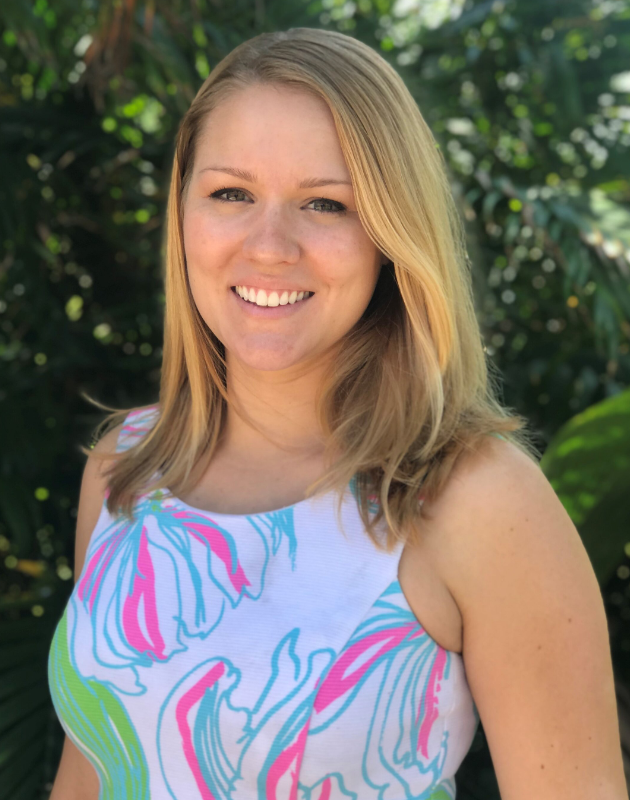
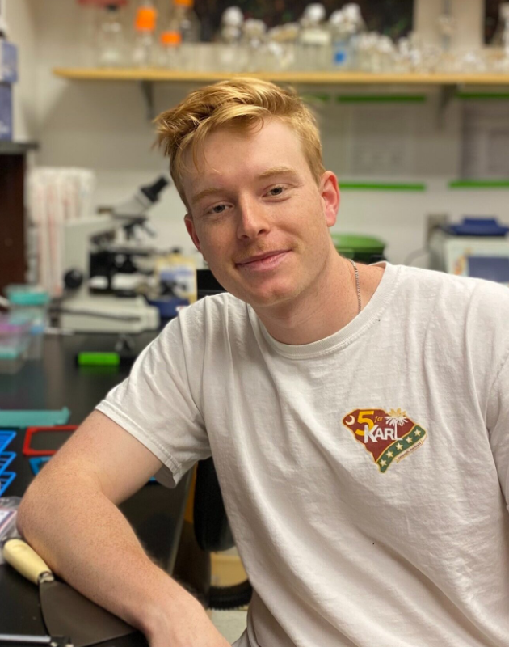

People Dr. Erica Dale Current membersAlyssa MicklePh.D. Graduate StudentJesus PenalozaPh.D. Graduate StudentCaitlin BrennanUndergraduate Student AlumniRichard Coffey, Ph.D.Ian Malone, Ph.D.Rachel Nosacka, Ph.D.Natale HallJulian Tobon ArosemenaPravalika MandaMarisa NashJulia CesarYasameen JoulaeeRobert Lamprecht